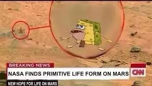

Caveman Spongebob


- Primitive Sponge only appears in one episode of the Nickelodeon cartoon, wherein he and prehistoric Patrick get lessons in jellyfishing from Squidward. However, it's one specific moment of the episode that has suddenly become meme-worthy
- Everyone on the internet relates to the surprised and frightened stance taken by Primitive Sponge